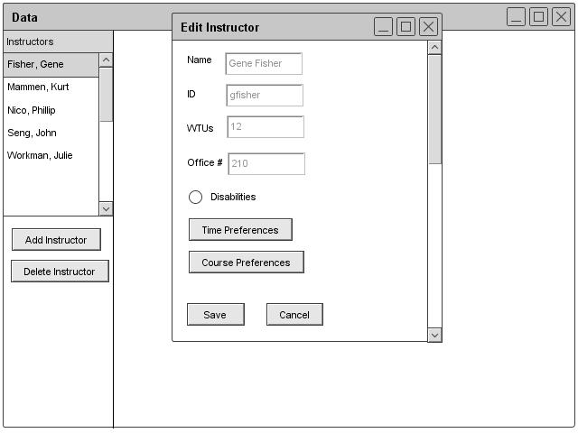
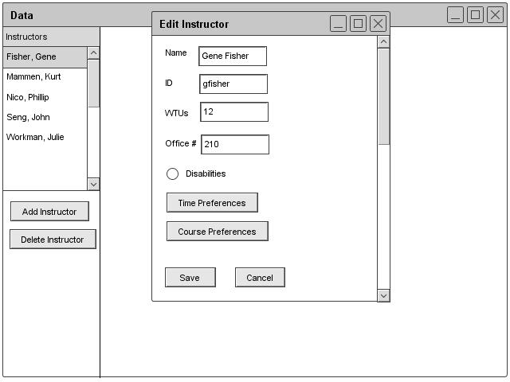

2.3.1.2: Editing Instructor Information
Once the instructor hits Edit under the instructor heading, the Scheduler displays a database window with the instructor information. The professor can only edit information for the instructor's own entry. Also, the instructor can only edit time and course preferences. The form greys out all the other fields outside of time and course preferences. After editing the information, the instructor clicks the save button to save the preferences to the database. Figure 18 shows the edit instructor dialogue from an instructor's point of view.

Figure 18: Instructor's Edit Instructor Dialogue

Figure 19: Administrator's Filled Edit Instructor Dialogue
prev: instructor-add | next: instructor-remove | up: data-instructor | index: index